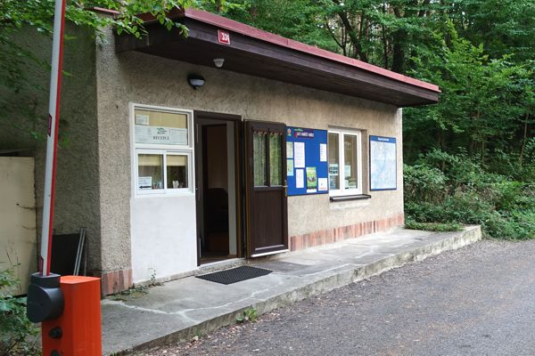
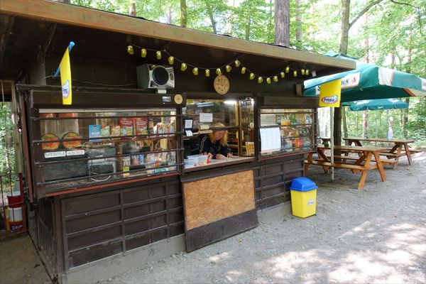
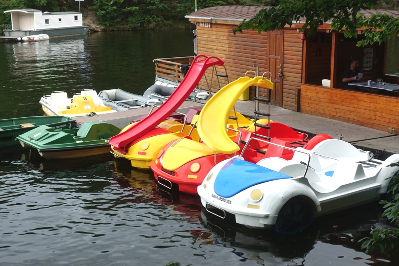
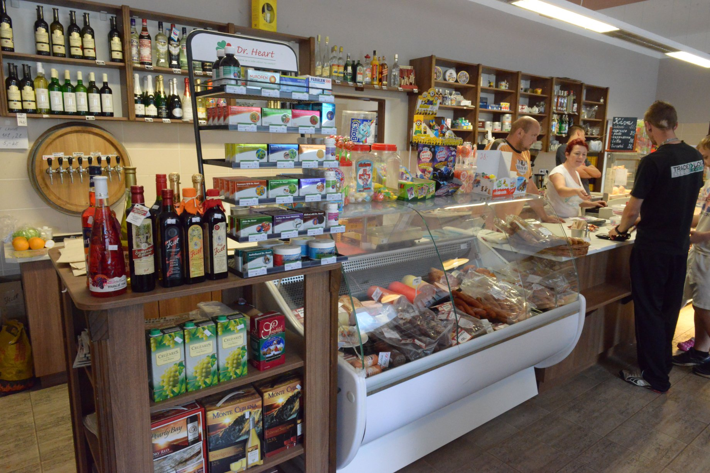

Služby
Recepce
Recepce je situovaná u vjezdu do kempu. Slouží zejména k zápisu hostů k pobytu, dále zde lze zakoupit různé drobnosti jako pohlednice, mapy, turistické známky, dřevo nebo grilovací uhlí. V recepci si také můžete nechat nabít telefon či notebook, případně i autobaterii, nebo namrazit chladící difuzory do přenosné chladničky. Také zde půjčujeme různé sportovní náčiní a hry, např. badminton, petanque, apod, a přenosná ohniště či grily.
Provozní doba je vyvěšená na recepci, avšak ubytovat se zde můžete kdykoli. Pokud přijedete mimo provozní dobu, postupujte podle pokynů vyvěšených na recepci.

Kiosek s občerstvením
Kiosek se nachází v jihovýchodní části tábořiště, poblíž recepce. Nabízí široký sortiment alko i nealko nápojů, rychlé občerstvení (párek v rohlíku, langoš, aj.), ale i "velká" jídla, např. smažený sýr, řízek s hranolky, pizzu, a další. Samozřejmostí je točené pivo, kvalitní espresso i zmrzlina. Můžete si zde také nechat nabít mobil nebo notebook, dále půjčujeme vybavení na stolní tenis (stůl je hned za kioskem), šipky, karty a šachy... U kiosku je venkovní posezení s kapacitou 40 míst, situované ve stinném lesním prostředí. Vaše děti zabaví šplhací věž se skluzavkou nebo pískoviště.

Půjčovna lodiček
Půjčovna nabízí řadu různých typů rekreačních plavidel. Můžete si zde zapůjčit člun s motorem, vodní šlapadlo, pramici, kajak nebo paddleboard. Najdete ji v severní části kempu, na molu v zátoce nebřišského potoka.
Provozní doba v červenci a srpnu - denně 10:00 - 19:00
Na půjčovně přijímáme pouze hotovost - nelze platit kartou. Pro půjčení lodiček je potřeba osbní doklad (občanský průkaz či cestovní pas). U člunů s motorem je navíc potřeba předložit také řidičský průkaz a kauce.

Obchod s potravinami
Obchod najdete v Jablonné nad Vltavou přibližně 3,5 km od kempu. Dostanete zde nejen čerstvé pečivo, uzeniny, mléčné výrobky a další základní potraviny. Součástí obchodu je i cukrárna nabízející sortiment dortíků a zákusků, ale třeba také chlebíčky a samozřejmě kopečkovou nebo točenou zmrzlinu.

Naše ocenění
Ohodnoťte nás v soutěži